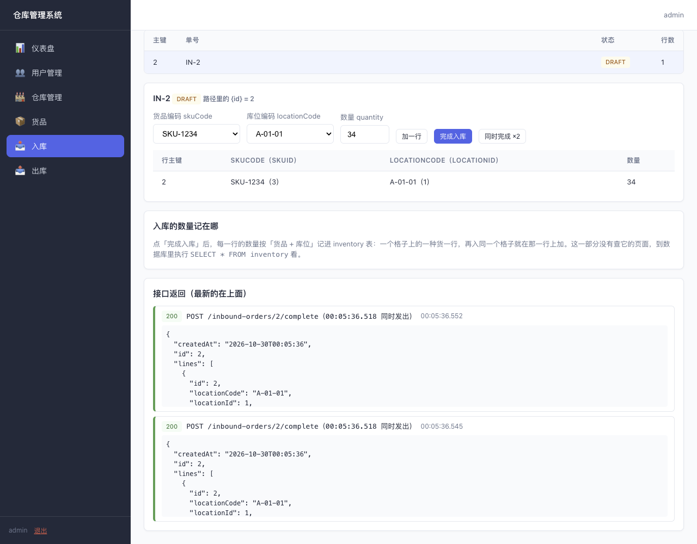
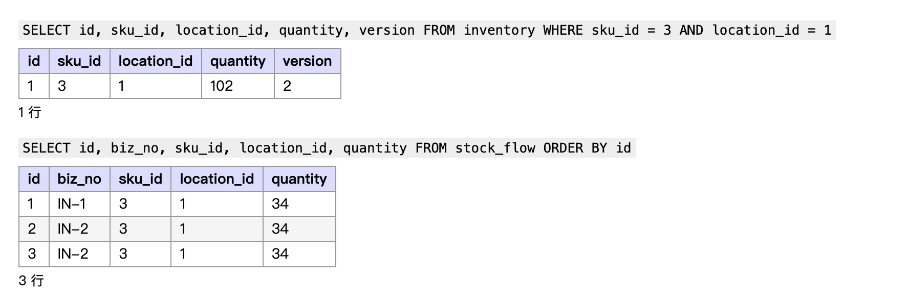

1. 问题是什么
入库页点「完成入库」，后端把这张单每一行的数量加进 inventory，写一行 stock_flow，再把单子改成 COMPLETED。一张单只能完成一次。
可是同一张单的「完成入库」请求如果同时到了两次，比如用户连点了两下、网络重发了一次、两个浏览器标签同时点，库存会被加两次。下面是老师在 MySQL 上实测的结果（示例学号 2023011234，所以货品是 SKU-1234，数量 34）：


stock_flow 里 IN-2 有两行。第二部分课上讲的是两张出库单同时完成、库存扣错。这次是同一张入库单完成了两次，道理相通，代码要你自己改。
2. 你要做的四步
先在 Gitee 上把老师的后端、前端两个仓库各 Fork 一份到自己名下，用 GitHub Desktop 克隆你自己的那两份，从「第二部分」分支新建 作业一 分支再改，改完 Push 到你自己的仓库。
第一步：复现
- 后端加一个开关
app.lesson.inbound-complete-once，取值on/off，默认on。off时走现在的写法，能复现上面的问题。写法参照第二部分的optimistic-lock：LessonSwitches和application.yaml。 - 前端入库页加一个按钮「同时完成 ×2」：把同一张单的两个「完成入库」请求同时发出去，两个结果都显示在「接口返回」里。写法参照出库页的「同时完成勾选的单」（
outbound/list.ts的completeTogether）。 - 后端启动参数加
--app.lesson.inbound-complete-once=off，用自己的数据做一遍，截图页面和数据库。
注意：复现前先往这个库位入一次库，让
inventory 里已经有这一行。格子原来没有这种货时，两次请求都会去插入第一行，撞唯一键返回 500。那是另一个现象，修好之后它也会一起消失，但复现时先避开。第二步：分析
用一张时序表写清两个请求各自走到了哪一步，数据库里的 status 和 quantity 当时是多少。然后回答三个问题：
- 为什么两个请求都认为这张单还是草稿？
InboundService上已经有@Transactional，为什么挡不住？- 这个问题和第二部分「两张出库单同时完成」哪里一样？
第三步：修复
开关 on 时，同一张单只能完成一次：先到的那次成功，后到的那次返回 400（错误码 INBOUND_NOT_DRAFT），库存只加一次，流水只有一行。
- 修法要靠数据库挡住。想想第二部分是怎么让「后写的那一次」失败的。
- 不能只用 Java 的
synchronized或ReentrantLock：后端跑两台时，一台的锁管不到另一台。 - 改的地方写注释，说清这一行在防什么。
第四步：验证
- 并发测试：两个线程同时完成同一张单。开关
off时断言库存加了两次；on时断言只加一次、一次成功一次INBOUND_NOT_DRAFT。写法参照第二部分的OutboundRaceSupport、OutboundDefectPathTest、OutboundFixedPathTest，开关用@TestPropertySource写在测试类上。 - 原有测试全部通过：
./mvnw test显示BUILD SUCCESS。 - 页面和数据库：开关
on，用一张新单再点「同时完成 ×2」，截图一个 200、一个 400，以及数据库里只加了一次。
3. 数据用你自己的学号
报告里所有截图都用自己的数据，每个人都不一样：
- 货品编码
SKU-学号后四位，例如学号 2023011234 就是SKU-1234。 - 入库数量是学号末两位，末两位是 00 就用 100。
4. 交什么
| 交什么 | 要求 |
|---|---|
| 后端代码 | 个人 Gitee 仓库的 作业一 分支。至少两次提交：先提交「复现」（开关、off 的写法），再提交「修复和验证」（on 的写法、并发测试）。 |
| 前端代码 | 个人 Gitee 仓库的 作业一 分支，入库页有「同时完成 ×2」。 |
| 报告 | 用本目录的 作业一-报告模板.docx 写，四个步骤都要有。导出 PDF，文件名 学号-姓名-作业一.pdf，交到课程平台。 |
仓库设成公开，或者把老师加为成员。截止后再推送的提交不算。
老师批改时会：拉下你的两个仓库，./mvnw test，后端分别用 off、on 启动，在页面上点「同时完成 ×2」，到数据库看库存。交之前自己按这个顺序走一遍。
5. 评分
| 项 | 看什么 | 分 |
|---|---|---|
| 复现 | off 时按钮能让库存加两次；报告里有页面和数据库截图 | 20 |
| 分析 | 时序表对；三个问题答到点上 | 20 |
| 修复 | on 时只加一次、后到的返回 400；靠数据库挡住；注释写清楚；报告逐行说明改动 | 25 |
| 验证 | 并发测试 off、on 都有断言并通过；原有测试全过；报告有截图 | 25 |
| 报告规范 | 用自己学号的数据；截图清楚、图下有说明 | 10 |